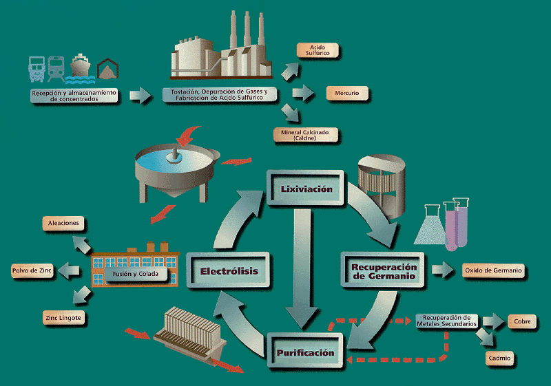
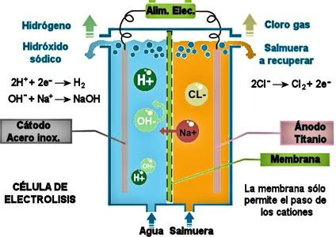
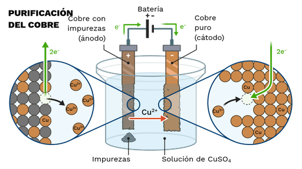
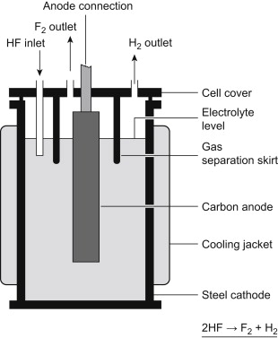

Electrólisis: Forzando Reacciones Químicas No Espontáneas
Aplicaciones y Principios Cuantitativos
Clase Interactiva
Fecha:
Clase Interactiva
Fecha:
El Aluminio: metal ligero, resistente, el más abundante en la corteza terrestre.
Pero estaba firmemente atrapado en el óxido de aluminio (\( \text{Al}_2\text{O}_3 \)) con un punto de fusión superior a \( 2000^\circ \text{C} \).
Era imposible/carísimo extraerlo de forma masiva. Era un metal más caro que el oro, usado solo en lujos.
En 1886, el joven Charles Hall tomó el desafío de su profesor: "Quien descubra un método barato para producir aluminio...". Su intuición: ¡la Electrólisis era la clave! Pero, ¿cómo aplicarla a \( \text{Al}_2\text{O}_3 \) sin temperaturas extremas?
Hall encontró la solución genial: usar Criolita (\( \text{Na}_3\text{AlF}_6 \)) fundida.
La Criolita funde a \( \sim 1000^\circ \text{C} \) y ¡ disuelve la Alúmina, creando un baño conductor!
Aplicando electrólisis al baño fundido:
En el Cátodo (-): Reducción de \( \text{Al}^{3+} \to \text{Al}(l) \)
\( \text{Al}^{3+} + 3e^- \rightarrow \text{Al}(l) \)
(El francés Paul Héroult hizo el mismo descubrimiento ¡en el mismo año!).
¡El Proceso Hall-Héroult hizo caer el precio del aluminio, democratizándolo y transformando el mundo!
Reacción Redox Espontánea
Reacción Redox No Espontánea
Las pilas galvánicas usan reacciones espontáneas para generar electricidad (requieren semiceldas separadas y puente salino usualmente).
La electrólisis usa electricidad externa para forzar reacciones no espontáneas (a menudo en una sola cuba).
Convierte energía eléctrica energía química.
Fundamental para obtener elementos/compuestos reactivos (Na, Cl₂, F₂, Al) o purificar metales (Cu, Zn).
¡Ojo con los signos! Galvánica: Ánodo(-), Cátodo(+). Electrolítica: Ánodo(+), Cátodo(-).
Oxidación siempre en Ánodo, Reducción siempre en Cátodo.
Requiere fuente DC externa.
Ánodo conectado al (+), Cátodo al (-).
Cátodo (-): Atrae cationes (+), ocurre Reducción.
Ánodo (+): Atrae aniones (-), ocurre Oxidación.
Electrolito permite movimiento de iones.
Fuente "bombea" electrones.
\[ V_{apl} \geq |-E_{celda}| + \eta + IR \] .
Principios que relacionan la cantidad de sustancia transformada con la cantidad de electricidad.
Según Michael Faraday, la masa de un elemento transformada en una electrólisis es independiente de la composición química del electrolito, siempre que el estado de oxidación del elemento sea el mismo (ej: CuSO₄, Cu(NO₃)₂).
La masa ($m$) de un elemento depositado o disuelto en un electrodo es directamente proporcional a la cantidad de electricidad ($Q$) que circuló en la celda. La constante de proporcionalidad es denominada equivalente electroquímico.
\[ m \propto Q \]
Las masas de distintos elementos transformadas en un mismo circuito electrolítico son directamente proporcionales a sus pesos equivalentes químicos ($Eq = M/z$).
\[ m \propto Eq \]
Combinando ambas leyes y sabiendo que \(Q = I \cdot t\), la masa ($m$) de sustancia transformada se calcula como:
\[ m = \frac{M \cdot I \cdot t}{z \cdot F} \]
Carga de 1 mol de e⁻.
\[ F \approx 96485 \text{ C/mol e}^- \]
\( m \propto Q \)
Ánodo (+): \( \text{Cu}(s) \rightarrow \text{Cu}^{2+} + 2e^- \)
Cátodo (-): \( \text{Cu}^{2+} + 2e^- \rightarrow \text{Cu}(s) \)
Carga (Q): 0 C
Masa Cu Depositada (Cátodo): 0 g
Masa Cu Disuelta (Ánodo): 0 g
Ajusta los sliders. Necesitas suficiente voltaje para iniciar la reacción.
Masa transformada proporcional al Peso Equivalente para una carga fija (1 Faraday).
Observa cómo cambian los productos en Ánodo y Cátodo al variar el electrolito y el material del ánodo.
Ánodo (+): ...
Cátodo (-): ...
Carga Circulada: 96485 C (1 F)
Cátodo: 0 g
Ánodo: 0
Selecciona el electrolito y los materiales de los electrodos.
Calculadora de productos de electrólisis (\( m = \frac{M \cdot I \cdot t}{z \cdot F} \))
Calcula la cantidad de sustancia transformada ajustando los parámetros de la celda y la corriente.
Cantidad Circulada: 0 C
Cátodo: 0
Ánodo: 0
Ajusta los parámetros de la celda, corriente y tiempo.
Resolución de problemas cuantitativos.
Calcular masa Cu (M=63.5) con 2.50 A por 50.0 min. Reac: \( \text{Cu}^{2+} + 2e^- \rightarrow \text{Cu}(s) \)
# Cálculo detallado (Ej. 1) Corriente (I) = 2.50 A Tiempo (t) = 50.0 min = 50.0 * 60 s = 3000 s Carga (Q) = I * t = 2.50 A * 3000 s = 7500 C Moles de electrones (n_e) = Q / F = 7500 C / 96485 C/mol e- ≈ 0.0777 mol e- Reacción del Cátodo: Cu²⁺ + 2e⁻ → Cu(s) Para 1 mol de Cu(s) se necesitan 2 moles de e⁻. Relación estequiométrica: 1 mol Cu / 2 mol e⁻ Moles de Cu = n_e * (1 mol Cu / 2 mol e⁻) = 0.0777 mol e- * (1/2) ≈ 0.03885 mol Cu Masa de Cu = moles Cu * Masa Molar Cu Masa Molar Cu (M) = 63.5 g/mol Masa de Cu = 0.03885 mol * 63.5 g/mol ≈ 2.467 g Respuesta: ~2.47 g Cu
Calcular vol. total gas (H₂ y O₂) a TPE con 1.26 A por 7.44 h. Reac: \( 2H_2O \rightarrow 2H_2 + O_2 \)
# Cálculo detallado (usando Vm=24.79 L/mol @ 25°C, 1 bar - SATP para TPE) Corriente (I) = 1.26 A Tiempo (t) = 7.44 h = 7.44 * 3600 s = 26784 s Carga (Q) = I * t = 1.26 A * 26784 s = 33748.8 C Moles de electrones (n_e) = Q / F = 33748.8 C / 96485 C/mol e- ≈ 0.350 mol e- Reacciones: Cátodo: 2H₂O + 2e⁻ → H₂(g) + 2OH⁻ (z=2 para H₂ por mol) Ánodo: 2H₂O → O₂(g) + 4H⁺ + 4e⁻ (z=4 para O₂ por mol) Moles de H₂ = n_e / z_H₂ = 0.350 mol e- / 2 mol e⁻/mol H₂ ≈ 0.175 mol H₂ Volumen de H₂ = moles H₂ * Vm = 0.175 mol * 24.79 L/mol ≈ 4.334 L Moles de O₂ = n_e / z_O₂ = 0.350 mol e- / 4 mol e⁻/mol O₂ ≈ 0.0875 mol O₂ Volumen de O₂ = moles O₂ * Vm = 0.0875 mol * 24.79 L/mol ≈ 2.167 L Volumen total = Volumen H₂ + Volumen O₂ = 4.334 L + 2.167 L ≈ 6.501 L Respuesta: 4.334 L H₂ + 2.167 L O₂ = 6.501 L Total
Cuando el NaCl se funde (~801 °C), sus iones Na⁺ y Cl⁻ adquieren movilidad, permitiendo la conducción eléctrica y la electrólisis.
Iones presentes: \( \text{Na}^+(l), \text{Cl}^-(l) \)
En el Cátodo (-): Reducción del Na⁺
\( \text{Na}^+(l) + e^- \rightarrow \text{Na}(l) \quad E^\circ = -2.71 \text{ V} \)
En el Ánodo (+): Oxidación del Cl⁻
\( 2\text{Cl}^-(l) \rightarrow \text{Cl}_2(g) + 2e^- \quad E^\circ = +1.36 \text{ V} \)
\( 2\text{Na}^+(l) + 2\text{Cl}^-(l) \rightarrow 2\text{Na}(l) + \text{Cl}_2(g) \quad E^\circ_{celda} = -4.07 \text{ V} \)
Se requiere un voltaje aplicado mayor a 4.07 V (más sobrepotenciales y caída IR) para forzar esta reacción no espontánea.
En solución acuosa, además de Na⁺ y Cl⁻, también está presente el agua (\( \text{H}_2\text{O} \)). Esto introduce reacciones competitivas en ambos electrodos.
Los cationes y el agua pueden reducirse. Se reduce la especie con el potencial de reducción más ALTO (menos negativo).
\( \text{Na}^+(ac) + e^- \rightarrow \text{Na}(s) \quad E^\circ = -2.71 \text{ V} \)
\( 2\text{H}_2\text{O}(l) + 2e^- \rightarrow \text{H}_2(g) + 2\text{OH}^-(ac) \quad E^\circ = -0.83 \text{ V} \) (en medio neutro/básico)
Comparando potenciales, el agua (\( -0.83 \text{ V} \)) se reduce mucho más fácilmente que el Na⁺ (\( -2.71 \text{ V} \)).
Los aniones y el agua pueden oxidarse. Se oxida la especie con el potencial de oxidación más ALTO (potencial de reducción más BAJO).
\( 2\text{Cl}^-(ac) \rightarrow \text{Cl}_2(g) + 2e^- \quad E^\circ_{ox} = -1.36 \text{ V} \)
\( 2\text{H}_2\text{O}(l) \rightarrow \text{O}_2(g) + 4\text{H}^+(ac) + 4e^- \quad E^\circ_{ox} = -1.23 \text{ V} \) (en medio ácido)
Comparando potenciales estándar de oxidación, el agua (\( -1.23 \text{ V} \)) *parece* oxidarse más fácilmente que el Cl⁻ (\( -1.36 \text{ V} \)).
Entonces, ¿qué reacciones ocurren realmente?
Las reacciones reales pueden verse afectadas por la concentración (ecuación de Nernst) y los sobrepotenciales (voltaje adicional necesario para que una reacción ocurra a una velocidad apreciable, especialmente formación de gases).
En soluciones concentradas de NaCl (salmuera), el sobrepotencial para la formación de \( \text{O}_2 \) es significativo (~0.4-0.6V en ánodos inertes). Aunque la oxidación de \( \text{H}_2\text{O} \) tiene un potencial estándar ligeramente menos negativo (\( -1.23 \text{ V} \)), la alta concentración de \( \text{Cl}^- \) (cuyo potencial de oxidación se vuelve menos negativo por la ecuación de Nernst, además de tener un menor sobrepotencial en muchos materiales) en el ánodo le permite competir exitosamente y ser oxidado preferentemente.
En el Cátodo (-): Siempre se reduce el agua:
\( 2\text{H}_2\text{O}(l) + 2e^- \rightarrow \text{H}_2(g) + 2\text{OH}^-(ac) \)
En el Ánodo (+): Se oxida el cloruro (si el ánodo es inerte):
\( 2\text{Cl}^-(ac) \rightarrow \text{Cl}_2(g) + 2e^- \)
\( 2\text{NaCl}(ac) + 2\text{H}_2\text{O}(l) \rightarrow \text{H}_2(g) + \text{Cl}_2(g) + 2\text{NaOH}(ac) \)
(Este es el proceso industrial Cloro-Álcali para producir H₂, Cl₂ y NaOH).
En soluciones diluidas de NaCl, la concentración de \( \text{Cl}^- \) es muy baja. Según la ecuación de Nernst, un potencial más negativo se requiere para oxidar el Cl⁻ a bajas concentraciones. En este caso, el efecto de la baja concentración de \( \text{Cl}^- \) se vuelve más importante que el sobrepotencial del \( \text{O}_2 \), haciendo que la oxidación del agua sea energéticamente más favorable.
En el Cátodo (-): Siempre se reduce el agua:
\( 2\text{H}_2\text{O}(l) + 2e^- \rightarrow \text{H}_2(g) + 2\text{OH}^-(ac) \)
En el Ánodo (+): Se oxida el agua (si el ánodo es inerte):
\( 2\text{H}_2\text{O}(l) \rightarrow \text{O}_2(g) + 4\text{H}^+(ac) + 4e^- \)
\( 2\text{H}_2\text{O}(l) \rightarrow 2\text{H}_2(g) + \text{O}_2(g) \)
(La electrólisis del agua se vuelve la reacción principal).
Explora qué reacciones se predicen por potencial y cuáles ocurren realmente en distintas condiciones de NaCl.
Condiciones Seleccionadas: ...
Cátodo (-): ...
Ánodo (+): ...
Cátodo (-): ...
Ánodo (+): ...
...
Producción a gran escala de materiales.
Electroobtención Zn (>99.9%) de ZnSO₄. \( \text{Zn}^{2+} + 2e^- \rightarrow \text{Zn}(s) \)
Electrólisis salmuera → Cl₂, H₂, NaOH. \( 2\text{NaCl} + 2\text{H}_2\text{O} \rightarrow \text{Cl}_2 + \text{H}_2 + 2\text{NaOH} \).
Purificación Cu bruto (>99.99%). Ánodo impuro, Cátodo puro. \( \text{Cu}(\text{impuro}) \rightarrow \text{Cu}(\text{puro}) \).
Único método. Electrólisis HF/KF fundido. \( 2\text{HF} \rightarrow \text{H}_2 + \text{F}_2 \).
Diagrama del Proceso
Diagrama del Proceso
Diagrama del Proceso
Diagrama del Proceso
Diseño y operación industrial.
Más allá de la producción básica.
Recubrimiento metálico (Cr, Ni, Ag).
Capa óxido protectora (Al₂O₃).
Síntesis química "limpia".
Electrocoagulación, desinfección.
Electrólisis forzada reversible.
Electrólisis agua con renovables.
Conceptos esenciales de la electrólisis.
Espero haya sido útil para comprender la electrólisis.
¿Preguntas?